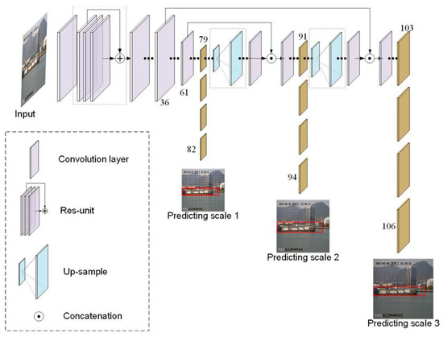
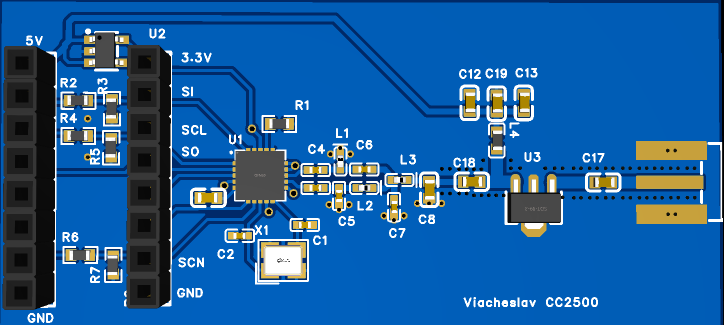
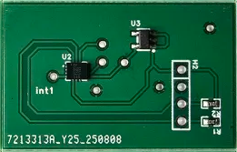

Evolution of YOLO Architecture
An overview of the YOLO object detection models,
highlighting the key architectural changes and improvements from YOLOv3 to YOLOv8.

Embedded
Why I Use the CC2500 in My Projects
A short overview of the TI CC2500 2.4 GHz transceiver — a versatile chip I often use as a receiver
in quick prototypes. Includes comparison with nRF24L01 and an explanation of why the built-in RSSI
makes it ideal for signal analysis and fast prototyping.

IMU Comparison: MPU-6050 vs LSM6D*
A practical comparison of two popular 6-axis IMUs, covering noise, power, features, and use cases
for robotics, wearables, and embedded controllers.
